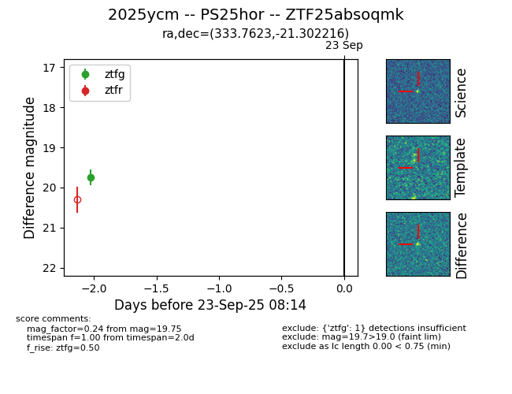

FINK: ZTF25absoqmk
Lasair: ZTF25absoqmk
ALeRCE: ZTF25absoqmk
TNS: 2025ycm
YSE: 2025ycm
ZTF25absoqmk (ztf,fink)
2025ycm (tns,yse)
PS25hor (panstarrs)
equatorial (ra, dec) = (333.7623,-21.30222)
galactic (l, b) = (33.5540,-54.01419)

last ztfg=19.75
1 ztfg detections